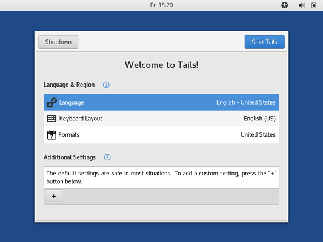

For those who care deeply about their computer security and/or those holding a non-trivial amount of value in Bitcoin over time, a daily-use PC is likely too insecure as an environment to be used for performing these cryptographic tasks. Hardware wallets are a good compromise between convenience and security. However, there are reasons why you might need more direct access to your keys, such as performing offline transactions. Bringing your private keys or seed phrase onto an insecure PC defeats the security advantage of the hardware wallet and is generally inadvisable.
As a compromise, some of the security properties of a hardware wallet can be preserved by running a temporary session of a Linux-based OS. This solution will run only open-source software from a known source to reduce the risk of any malware exploits. This solution does not write anything to your hard drive (unless you really force it), so there is less risk of your private keys being retained on the PC to be recovered by someone else later.
This guide covers TAILS which is the superior security option for a temporary live-boot operation system over Ubuntu. However, Ubuntu may be a more familiar user-friendly option for some. We have provided an equivalent guide for Ubuntu 16.04 which you can optionally follow if that is a closer match for your skill and requirements. However, all other things being equal, TAILS should be the first choice for security and privacy.
At the time of the writing of this guide, the current version of TAILS is 3.7.1, however it tends to be patched every couple weeks. This is an important part of the ethos of the distribution, as they must fix security vulnerabilities ASAP since it is designed for users that potentially have a lot to lose if their security and privacy is compromised. Other than the security updates, the function of the OS and the set of included software is quite stable.
If you are burning a DVD disc of the current version of TAILS, for maximum security, be prepared to re-burn a new one with an upgrade in a couple weeks to keep up.
You need a PC or laptop that meets the minimum system requirements for running TAILS. It is okay if this PC has a different normal use with a different OS installed (e.g. this could be your daily Windows PC) since the live session we will be running is only temporary and will not affect the underlying OS.
TAILS can work on Mac hardware, however it is not particularly well supported. It is best to use PC hardware.
For better security, it is best if the PC has a DVD drive that can burn discs. You will also need a blank DVD and a drive to write out the OS image to it in preparation. If you don't have an optical drive, you can still boot TAILS like this with a USB flash storage drive.
Since TAILS receives frequent updates, there is a need to frequently re-burn fresh discs. This is most secure secure when done from an existing older-version of TAILS, which is a secure platform for validating the integrity of the images and the signatures of the developers. For this task, it is handy to have two DVD drives available on the one system. One drive can boot the outdated TAILS OS image while the other drive burns the current-version TAILS OS image.
A USB flash storage drive is, however, a slight compromise on security since the USB flash storage can be compromised in more ways than a DVD. It is also a piece of storage that can potentially be written to (unlike a DVD). If you are going down the USB flash storage drive route, you will need a drive that is of at least 2GB capacity. Any previous data contents of this stick will be overwritten by this process. We do recommend purchasing one brand-new for this purpose to help ensure that it has not been previously compromised by malware.
There are much better guides for doing this that are tailored to your existing OS setup than could ever possibly be written here.
The basic story is that you first download the TAILS ISO, verify it, and burn/copy it onto the DVD/USB disk/drive. There is really only one version of the ISO that is provided by the project at any given time (the current patched version). You can find it from this link and follow the instructions from there if you are already familiar with this process.
The TAILS project has provided a fantastic walk-through with instructions tailored to your current setup. We advise following that. However, do consider going the DVD ISO burning route rather than the USB drive route since that is a superior option for handling Bitcoin private keys.
TAILS can be installed on a USB drive, which is the preferred and more convenient option according to the official guides. However, we advise against this in preference of the DVD option for handling Bitcoin keys.
If you desire to save files across boot sessions - such as your private financial info and notes - we do provide guides for setting up a full-disk-encrypted SD card or USB drive. This allows you to carefully manage what is saved across sessions with confidence that nothing is being written to the DVD-ROM OS image without your knowledge.
This is an exercise in getting your PC's BIOS to boot off of the DVD or USB stick rather than the connected hard drive that has Windows on it. It varies based on your exact hardware, so if you are not experienced with PC building and maintenance, getting hung up here is common. The TAILS documentation does not offer a particularly deep amount of help here. However, help from other distributions for this basic first step are relevant. The Ubuntu community guide is a good starting place for help and there are plenty of other resources available online.
You may need to watch your BIOS closely when it boots to see if there are instructions for opening the BIOS menu in the text that briefly appears. If that fails, you can try using Google with your laptop' or PC's model number and the words BIOS boot from DVD or BIOS boot from USB and hopefully you can find some specific instructions. If this is a custom-built PC, the motherboard's model number is what you should search on. Also, the motherboard's printed manual might offer some help.
If you are still stuck, you can try physically disconnecting your other drives, such that it has no other option but to boot off of the DVD or USB stick. Since we are not installing an OS, this is fine as long as you remember to re-attach it to make the underlying installed OS functional again once we are done.
Once your computer successfully starts booting off the TAILS ISO drive, you will see loading screens and it might take a couple minutes to complete, so be patient. When it finishes, you will see a screen that looks like this:
When it fully loads, you should get the first menu that looks like this:

For some advanced tasks, before booting into the desktop, you might want to use the Additional Settings menu for setting the root/administrator password or other. However, for basic use you should be fine with the defaults. If you
proceed, you should arrive at a blank desktop:
Depending on what you are intending to do, it is likely you will need to connect to the internet. The network control can be found on the panel on the top right, which you will need to click on to find the right menu entry to configure the network:
If you have a physical Ethernet cable connection, this might look different, but should also be more straightforward than connecting to WiFi.
If you are connecting to WiFi, there should be a list of networks you can select and you can follow the dialogue to enter the appropriate password:
Once you successfully connect to the internet, it might take another 30 seconds of waiting for Tor to finally come fully online. It needs to synchronize with the Tor network in order to work correctly. You will first get this message:
When it is fully finished you should get a notification that looks like this:
The awesome thing about TAILS is that only connect to the internet through Tor. The built-in browser is Tor Browser which is configured for security by default. For most purposes It should be good to launch and use right away:
Congratulation! Simply getting this far such that you have this live-DVD environment to connect to the internet is a huge tool in your toolbox. Because TAILS is so security-focused, using block explorers and other bitcoin-related tasks ins much more anonymous and much less prone to malware that might be sniffing your keyboard input, copy-paste buffers, and network traffic.
For some of the low-level terminal-based tasks that might be necessary for some Bitcoin-related tasks, it is often necessary to proxy traffic through a SOCKS5 proxy that has been provided on TAILS in order to properly connect to the external service. This proxy port is provided on localhost:9050. If you are having trouble connecting and using some service, usually proxying through this SOCKS5
port is the solution.
In another article we cover the installation and use of the proxychains tool that is sometimes required for more advanced operations (such as using the bitcoin_fork_claimer tool):
Since we are doing high-security operations, it always comes at a trade-off with convenience. There are no easy to read graphical menus for many of the custom tasks involving Bitcoin keys, so we have to roll up our sleeves get into the Terminal.
To get to the Terminal application, we have to go to the Application menu in the top-left corner. Conveniently, the Terminal application icon is immediately visible:
If we click on the Terminal application icon, it should open appear on the desktop like this:
If you have made it this far, fantastic! We are now set up to get into some deep Bitcoining. We have several guides that build off of this and show you some specific tasks that you can get done in your temporary TAILS live session:
The beauty of a temporary live boot session is that as soon as you reboot your PC, it won't retain any memory of what you were doing. When you are done, shut down and remove the DVD or USB drive. If you disconnected the normal hard drive, be sure to reconnect. Your PC should boot back up normally.